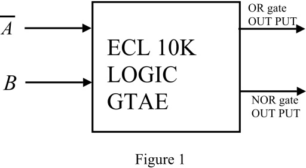
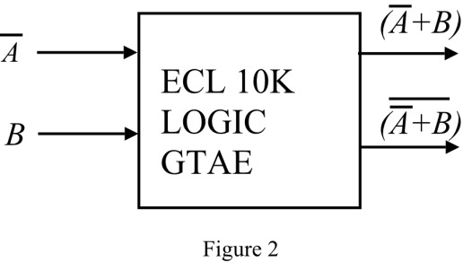
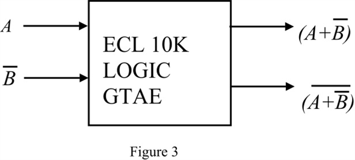
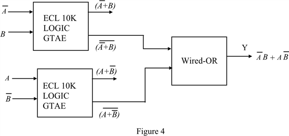

Refer to Figure 15.35 and 15.37 in the textbook.
Consider a basic ECL 10K logic gate and whose outputs are OR function and NOR function.
Draw the logic diagram of the ECL 10K logic family as shown in Figure 1.

To realize EX-OR function with the ECL logic gate consider the function .
Select proper inputs to ECL logic gate to get the output at NOR gate as .
Draw the following diagram as shown in Figure 2.

Select proper inputs to ECL logic gate to get the output at NOR gate as .
Draw the following diagram as shown in Figure 3.

Consider the wired-OR operation can be used to increase the flexibility of ECL logic gate.
Draw the following diagram that shows the realization of EX-OR function using ECL 10K logic gate family.

Therefore, the exclusive–OR function is realized using ECL logic circuit.